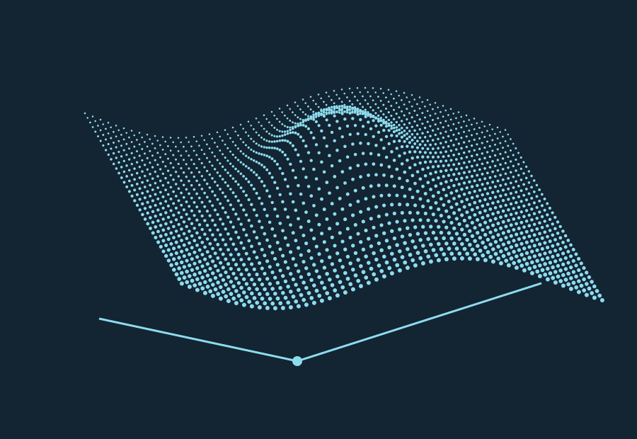

See depth take shape.In progress

Interactive concept study · Single-image depth and spatial perception
Mapping the unseen
Monocular SLAM: building a persistent 3D map from a moving camera.
Explore the implementation ↗Monocular depth & Visual SLAM
I implemented camera initialization, persistent landmarks, keyframe mapping, bundle adjustment, relocalization, and loop closure. OpenCV provides feature extraction and geometric solvers; SciPy handles nonlinear least squares.
A separate PyTorch pipeline uses pretrained Depth Anything V2 Small for relative depth visualization. Synthetic geometry and generated-video tests exercise the system; real indoor accuracy and metric scale have not been established.
- Focus
- Computer vision, depth estimation, robotics perception
- Built with
- Python, OpenCV, SciPy, PyTorch
- Status
- Ongoing development